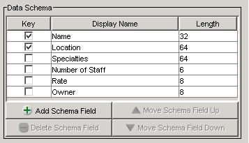

Configuring the Application
Configuring the client application can be achieved from the main application window by invoking the Configuration Dialog action. The application reads a file called "suncertify.properties" from the current working directory at start-up time. This file contains various configuration information that is related to the operation of both the client and server application. If this configuration file does exist, a set of default configuration properties is used. The application will save the configured properties when it closes. The default configuration values have a schema defined that is consistent with version 1.0 of the data server. The client application will not connect to a data source if no schema has been defined, if the client application is in local mode and the data source location has not been specified or if the client application is in networked mode and the JNDI name of the remote object has not been specified. The definition of a data source is dependant on the client application start-up mode. This section explains the meaning of the attributes that are presented in the configuration dialog.
Certain attributes of the configuration dialog are "read-only" while the application is connected to a data source. In order to modify these attributes, disconnect from the data source.
Once the changes have been committed by pressing the 'OK' button, the new suncertify.properties configuration file will be written. To cancel the configuration and prevent writing the configuration changes to file, press the 'Cancel' button.
This panel allows the user to configure the data schema on the client to be consistent with the data schema on the server. The data schemas on the client and the server must be consistent, otherwise, behaviour of the client application is indeterminate. The default configuration provides a schema definition that is consistent with version 1.0 of the data server. The panel allows the user to add new fields to the schema , delete existing fields from the schema , change the order of the fields in the schema / , and edit the attributes of each field in the schema. Each field may or may not represent a unique key, has a descriptive display name, and a length in bytes. A panel containing a data schema setting that is consistent with version 1.0 of the server is:

When the client application is started in networked mode, the user must configure the JNDI name of the remote DB object. The client application will not connect to the data source until this has been specified. The default configuration settings use the value "Data". The user may also optionally specify the host and/or port of the RMI registry to locate the remote DB object on. The host defaults to "localhost" and the port defaults to "1099".
The user must configure the location of the database file which is used by the client application when in local mode. The client application (in local mode) will not connect to the data source until this has been specified. This file must exist and must contain valid header data.
The confirm action checkboxes allow the user to configure whether or not certain actions will have a confirmation dialog displayed before performing the action. If the checkbox is checked for an action, the application will confirm with the user before performing that action.
Server configuration is provided by a dialog that is displayed when the application is started in server mode. The dialog allows the user to enter the location of the back-end data source file name, the local TCP port to bind the server to, and the JNDI name to bind the remote data object to. When the user starts the server, the application will become non-responsive and will only respond simple commands, such as exiting the application. There is no ability to stop the server after it has been started, except for exiting the application entirely.